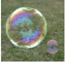
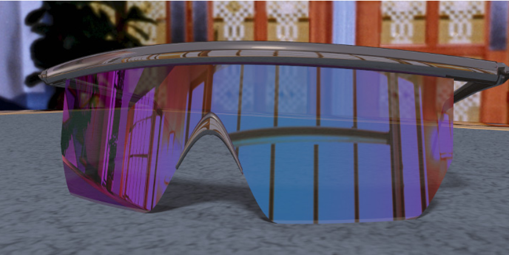

CS184 / 284A · Final project proposal
This project aims to extend a standard RGB path tracer to support wavelength-dependent rendering, enabling the accurate simulation of iridescent phenomena like thin-film interference seen in soap bubbles and CDs. By modeling light as a spectrum of wavelengths rather than three simple color channels, we will implement physically-based reflectance models to capture the complex constructive and destructive interference that creates shifting “rainbow” color effects based on the viewing angle. Using our existing path tracing framework from Homework 3 as a foundation, we will build a modified pipeline that integrates spectral representation and specialized BRDFs to render iridescent surfaces in diverse lighting environments.
Team members
Standard path tracers treat light as three channels (RGB), which are not able to capture iridescence. We are solving how to render this accurately and quickly.
Iridescence appears everywhere in nature and manufactured objects (bubbles, butterfly wings, CDs, and so on), so it is important to be able to render it when showcasing images that have iridescent properties.
Iridescence is a physical phenomenon that occurs when microstructures on a surface are spaced so that certain visible wavelengths reflect constructively and others destructively. This often produces “rainbow” or bright, shifting colors as different wavelengths appear or disappear depending on how light bounces off the surface.
We plan to start with the path tracing algorithms we designed in Homework 3 and expand them following the methodology outlined in Nigel Morris’s paper Capturing the Reflectance Model of Soap Bubbles. We will model light as a combination of many wavelengths and handle refraction and BRDFs so that different wavelengths can be amplified or attenuated. We will then combine the wavelength spectrum, convert to CIE color space, and then to RGB, as the paper suggests.
Build a modified path tracer that renders iridescent surfaces with physically correct color shifts as the viewing angle changes.
We hope to render images of soap bubbles and CDs that show iridescence similar to viewing the physical objects in person.
We have access to resources that already derive the math needed to render iridescence. Completing Homework 3 gave us a path tracer we can extend to implement interference behavior that produces iridescent appearance.
We aim to render surfaces with thin-film iridescent reflections (such as bubbles) and apply those reflections to objects in both indoor and outdoor environments to highlight differences between point lighting and diffuse lighting.
|
 |
 |
We will track overall render time to see whether the rendering pipeline remains reasonably efficient.
Our baseline goal is a rendering pipeline that accurately models how iridescent objects appear in different environments, including indoor, outdoor, dark, and bright scenes—what we must accomplish for a successful project and the grade we expect, with room for unexpected problems.
If we finish ahead of schedule, we will look for ways to improve performance, since we mainly prioritize a working implementation first. We would like to optimize enough for real-time rendering, or alternatively to render dozens of bubbles quickly or possibly an animated scene in at most a few hours.
Tasks and subtasks for the four weeks after the proposal, through presentations and finals.
The team may use a shared calendar or Google Tasks to coordinate; the milestones above are the planned checkpoints.
We will build on Homework 3, which provides the foundation for general ray tracing and which we will extend for iridescent objects (e.g. bubbles, CDs).